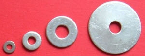
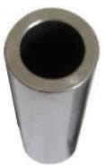

Annulus
 |
An annulus is a flat shape like a ring. |

The face of a metal washer is an annulus
Something shaped like an annulus is said to be annular.
Saturn has annular rings:
Area
Because it is a circle with a circular hole, you can calculate the area by subtracting the area of the "hole" from the big circle's area:

Area = πR2 − πr2
= π( R2 − r2 )

Example: a steel pipe has an outside diameter (OD) of 100mm and an inside diameter (ID) of 80mm, what's the area of the cross section?
Convert diameter to radius for both outside and inside circles:
- R = 100 mm / 2 = 50 mm
- r = 80 mm / 2 = 40 mm
Now calculate area:
Area = π( R2 − r2 )
Area = 3.14159... × ( 502 − 402 )
Area = 3.14159... × (2500 − 1600)
Area = 3.14159... × 900
Area = 2827 mm2 (to nearest mm2)
The equivalent formula for diameters is:
Area = π4( D2 − d2 )
Maybe you could try the previous example using that formula?
3234, 9054, 9055, 9056, 9057, 9058, 9059, 9060, 9061, 224